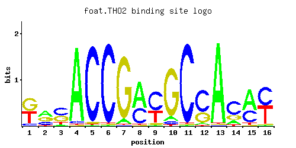
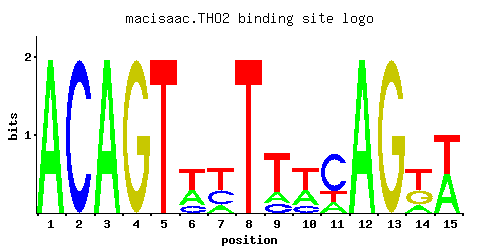

Subunit of the THO complex, which is required for efficient transcription elongation and involved in transcriptional elongation-associated recombination; required for LacZ RNA expression from certain plasmids
01 / RECOMMENDED MATRIX
Best-performing DNA-binding model. Fisher’s P-value 2.03e-11
Information content 12.41
Max PWM score 11.75
Recommended cutoff 7.64
View and copy the recommended matrices ↘ Position frequency matrix (PFM) Copy
A | 0.875 0.001 0.083 0.167 0.208 0.001 0.208 0.208 0.042 0.333 0.001 0.292
C | 0.083 0.001 0.001 0.001 0.001 0.958 0.125 0.083 0.875 0.001 0.001 0.167
G | 0.001 0.001 0.001 0.001 0.001 0.001 0.083 0.083 0.001 0.125 0.001 0.001
T | 0.042 1.000 0.916 0.833 0.792 0.042 0.583 0.625 0.083 0.541 1.000 0.541
Position count matrix (PCM) Copy
A | 87 0 8 16 20 0 20 20 4 33 0 29
C | 8 0 0 0 0 95 12 8 87 0 0 16
G | 0 0 0 0 0 0 8 8 0 12 0 0
T | 4 100 91 83 79 4 58 62 8 54 100 54
Position weight matrix (PWM) Copy
A | 1.01 -5.77 -1.35 -0.65 -0.43 -5.77 -0.43 -0.43 -2.03 0.04 -5.77 -0.09
C | -0.77 -5.19 -5.19 -5.19 -5.19 1.67 -0.36 -0.77 1.58 -5.19 -5.19 -0.07
G | -5.19 -5.19 -5.19 -5.19 -5.19 -5.19 -0.77 -0.77 -5.19 -0.36 -5.19 -5.19
T | -2.03 1.14 1.05 0.96 0.91 -2.03 0.60 0.67 -1.35 0.53 1.14 0.53
02 / COMPARATIVE BENCHMARKS
Alternative candidate matrices 2 Historical matrix candidates from the original ScerTF database. Expand a source to inspect its original logo, scores, and matrix values.
THO2 Foat et. al. P = 0.002183 View matrix ↘ 
Fisher’s P-value 0.002183
Information content 20
Max PWM score 19.05
Recommended cutoff 10.27
Position frequency matrix (PFM) Copy
A | 0.01 0.41 0.06 0.95 0.01 0.01 0.07 0.62 0.01 0.07 0.01 0.06 0.97 0.16 0.59 0.01
C | 0.09 0.22 0.47 0.03 0.96 0.97 0.01 0.37 0.59 0.05 0.97 0.64 0.01 0.60 0.35 0.50
G | 0.49 0.33 0.35 0.01 0.02 0.01 0.92 0.01 0.06 0.86 0.01 0.30 0.01 0.20 0.01 0.02
T | 0.41 0.04 0.11 0.01 0.01 0.01 0.01 0.01 0.35 0.02 0.01 0.01 0.01 0.04 0.05 0.48
Position count matrix (PCM) Copy
A | 1 41 6 95 1 1 7 62 1 7 1 6 97 16 59 1
C | 9 22 47 3 96 97 1 37 59 5 97 64 1 60 35 50
G | 49 33 35 1 2 1 92 1 6 86 1 30 1 20 1 2
T | 41 4 11 1 1 1 1 1 35 2 1 1 1 4 5 48
Position weight matrix (PWM) Copy
A | -3.47 0.25 -1.67 1.09 -3.47 -3.47 -1.52 0.66 -3.47 -1.52 -3.47 -1.67 1.11 -0.69 0.61 -3.47
C | -0.69 0.20 0.96 -1.79 1.67 1.68 -2.89 0.72 1.19 -1.28 1.68 1.27 -2.89 1.20 0.66 1.02
G | 1.00 0.61 0.66 -2.89 -2.20 -2.89 1.63 -2.89 -1.10 1.56 -2.89 0.51 -2.89 0.11 -2.89 -2.20
T | 0.25 -2.08 -1.07 -3.47 -3.47 -3.47 -3.47 -3.47 0.09 -2.77 -3.47 -3.47 -3.47 -2.08 -1.86 0.41
THO2 Macisaac et. al P = 7.23e-11 View matrix ↘ 
Fisher’s P-value 7.23e-11
Information content 18.98
Max PWM score 15.42
Recommended cutoff 11.27
Position frequency matrix (PFM) Copy
A | 0.997 0.001 0.997 0.001 0.001 0.339 0.161 0.001 0.169 0.330 0.169 0.997 0.001 0.169 0.499
C | 0.001 0.997 0.001 0.001 0.001 0.166 0.330 0.001 0.165 0.165 0.661 0.001 0.001 0.001 0.001
G | 0.001 0.001 0.001 0.997 0.001 0.001 0.001 0.001 0.001 0.001 0.001 0.001 0.997 0.334 0.001
T | 0.001 0.001 0.001 0.001 0.997 0.495 0.508 0.997 0.665 0.504 0.169 0.001 0.001 0.497 0.499
Position count matrix (PCM) Copy
A | 99 0 99 0 0 33 16 0 16 33 16 99 0 16 49
C | 0 99 0 0 0 16 33 0 16 16 66 0 0 0 0
G | 0 0 0 99 0 0 0 0 0 0 0 0 99 33 0
T | 0 0 0 0 99 49 50 99 66 50 16 0 0 49 49
Position weight matrix (PWM) Copy
A | 1.14 -5.77 1.14 -5.77 -5.77 0.06 -0.69 -5.77 -0.64 0.03 -0.64 1.14 -5.77 -0.64 0.44
C | -5.19 1.71 -5.19 -5.19 -5.19 -0.08 0.61 -5.19 -0.09 -0.09 1.30 -5.19 -5.19 -5.19 -5.19
G | -5.19 -5.19 -5.19 1.71 -5.19 -5.19 -5.19 -5.19 -5.19 -5.19 -5.19 -5.19 1.71 0.62 -5.19
T | -5.77 -5.77 -5.77 -5.77 1.14 0.44 0.46 1.14 0.73 0.45 -0.64 -5.77 -5.77 0.44 0.44
03 / EXPERIMENTAL CONTEXT
Gene-level annotations and interactions. Genes bound in ChIP-chip experiments 1 genes No Data
Genes affected by TF deletion 1 genes No Data
Genes supported by both experiments 1 genes No Data